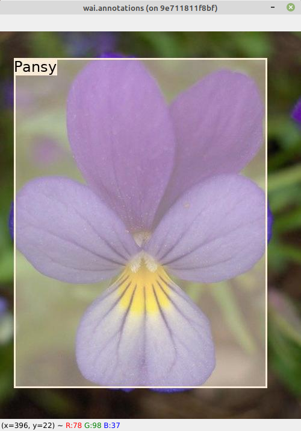

Combine annotations in single image#
In order to determine whether a model does not have a bias regarding
to the location of annotations when training, the to-annotation-overlay-od
plugin can generate a single image that shows the outlines of all the annotations
(bbox or polygon). If images have different sizes (e.g., from different
data collection batches), scaling the images and annotations to a specific
size, like the one a model uses internally is, recommended. The following
example overlays all the bboxes from the 17flowers
object detection dataset (zip) on a single image of 640x480 pixels:
wai-annotations convert \
from-voc-od \
-i "./17flowers/voc/*.xml" \
to-annotation-overlay-od \
-c 255,0,0,32 \
-s 640,480 \
-o ./to-annotation-overlay-od.png
Overlay annotations and display them#
The following loads an object detection dataset, overlays the annotations and displays them in a window:
wai-annotations convert \
from-voc-od \
-i "./17flowers/voc/*.xml" \
add-annotation-overlay-od \
--vary-colors \
--outline-alpha 255 \
--outline-thickness 3 \
--fill \
--fill-alpha 128 \
--font-size 24 \
--text-placement T,L \
--force-bbox \
image-viewer-od \
--size 1024,768 \
--position 300,150 \
--delay 200
